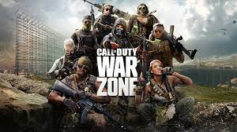

This page is all about game reviews and you will find reviews about many popular and amazing games which i have played. More reviews will come as soon i will play more different games.
| S.No. | Name | Review | My Rating | Image |
|---|---|---|---|---|
| 1 | Red Dead Redemption 2 | Rdr2 is the best game i have played till now and it is my favourite game till now. The graphics, the dialouges and even the enviroment of the game is amazing! I love to play this game whenever i am free. The main protagoinist of this game is Arthur Morgan, who is an cowboy and helps us explore the wild west era of America. This game has one of the best details and physcis ever. From eating food to breeding your horse, this game has everything you do in your real life. I just want to say that this game is a masterpiece.This game also has a online mode by which we can play this game with our friends. | ★★★★★ | |
| 2 | Grand Theft Auto 5 | Gta 5 is another great game which i have played. This is one of the best open world game i have played, and has everything which we have. The map is also big and have many locations such as mountains, a fully functional airport and even a movie theatre where you can go and watch a movie. This game has three protagnists, Michael, Franklin and Trevor. Every character has his own house, which we can explore and do mini activities like watching tv, and hanging out with other characters. | ★★★★★ | |
| 3 | Minecraft | Minecraft is the best survival game. In this game, you are thrown on an island and you need to chop trees, make your house, survive for nights and kill the dragon. The game has more than 200 differnt block which you can craft. As the namne suggests "mine"- You need to mine stone make stone tools then find iron make iron tools then find diamonds and make diamond tools. "Craft"- You can craft items like furnace, using which you can cook food, smelt iron ore and do many more things, you can also craft food items like bread, cake etc. For me the game is nice and in this game you can make anything that you want from a house to a fully operational calculator | ★★★★★ | |
| 4 | Battlefield 5 | Battlefield 5, is the best fps(first person shooter) story game i have played till now, it has a very nice story and the campaign is of like 6-7 hours but 7 hours is worth it, it feels like 70 hours. It also has a multiplayer mode, in which there are many different modes and all of them are nice. It has a community games mode in which you can create your own map and upload it where everyone else can play it, it has a sort of battle royale mode in which there are 64 players on a single map. There are more than 5 chapters in the offline mode of the game and the whole story is based on World War 2, all the guns, theme, songs literally everything is based on the world war 2 even the guns available in the multiplayer mode in the game is based on world war 2. | ★★★★★ | |
| 5 | Cod Of Duty Warzone | COD Warzone is such a great game, it has many different modes which we can play, 2-3 new game modes come every week which are fun to play. We can play battle royale, rebirth resurgence and plunder. The battle royale is not at all different its simillar to every other battle royale games. There are 2 maps, verdansk and Alcatraz. The verdansk one is made by the cod company but alcatraz is a prison in real life and is located in the atlantic ocean. It is also a fps game and is a bit tough to play but whatever it is fun to play. | ★★★★★ |  |
| 6 | Days Gone | Days Gone is a zombie-survival game in which the world is suffering from a zombie apocalypse and you need to fight your rivals and survive from the zombies too. You have different types of weapons such as guns, throwables and melee weapons. You and your partner bouzer have to fight zombies and the only vehicle you have is a bike. It is an open world game too and you can craft different items for your survival and as per me its the best zombie-survival game ever. | ★★★★★ | |
| 7 | Hitman 2 | Hitman 2, the best assassin assassin game ever, it has a big story and has 2 more parts, hitman 1 and hitman 3 which has come for both consoles and pc. In htiman you are in a company named ICA which gives you contracts to kill people doing illegal business such selling something bad like drugs. There are over 20 contracts in the game and it also has a online version and some expansion packs too. Overall the game is nice and i love playing it. | ★★★★★ | |
| 8 | Fortnite | Fortnite is the another battle royale game which i love playing. This game has mainly 3 modes - battle royale, arena and creative and every week 2-3 new modes come which are fun to play. Let's talk about the major modes, battle royale it is the classic battle royale mode in which there are 100 players who need to fight with each other and get the victory royale. Arena, you can consider it as the competitive mode of battle royale. Creative, it is a great mode in which 16 people together can play in just a single map and you can also create your own map. And the most unique feature of this game is that we can build walls, cones, floors and stairs. The game is a nice battle royale game and highly recommend you to play this game. | ★★★★★ | |
| 9 | Shadow of Tomb Raider | We all know that tomb raider is such a famous character and made games are made on tomb raider. Shadow of tomb raider is a very nice game, it has a very thrilling starting and a very thrilling ending too, i loved playing the game and the game is very fun to play, you never know when you are going to be attacked by someone, so its a very thrilling game and the game has won many different awards too. The only thing i didn't liked about this game was that the story of this game is very small, which is the only thing not good about the game. | ★★★★☆ | |
| 10 | Apex Legends | Apex legends, it is a fps game, nice graphics, cool gameplay and smooth controls and the game is overall good. Since i have not played the game much but still i liked the game very much and the only thing which i not liked is that the matchmaking is very slow and it almost takes 5 to 10 minutes for finding a single match. | ★★★★☆ | |
| 11 | Just Cause 4 | Just Cause 4 is a story mode game and is sequel to just cause 3. In just cause 4, you are rico who is the member of a secret organization and your objective is to finish all terrorist gang which is ruling your country. The worst thing in this game is that the missions are very similar and there is not much difference between different game modes. | ★★★★☆ | |
| 12 | Horizon Zero Dawn | Horizon zero dawn has won many awards and its very fun to play this game, i haven't completed the game so i cannot tell the real review but this review will be updated as soon as i will finish the game and the reason why i have given this game 3 stars is that the game is a bit boring as in the case of just cause 4, like every mission is about stealth but again, i haven't completed this game so this is not a real review, i have just played the game for like 2-3 hours. | ★★★☆☆ | |
| 13 | Rocket League | In rocket league you basically play football with cars instead of humans, it has many different modes, but there are two major modes classic and competitive. In classic, there are solos, duos, trios and squads and on the other hand, competitive is like you will get pro players with whom you need to fight. The game is a bit boring and not that much entertaining. | ★★★☆☆ | |
| 14 | Zombie Army 4:Dead War | This game is bad as hell, i cannot explain how bad this game is, its not at all interesting from the starting only i could not understand the story of the game and the gameplay and story of this game are fully messed up. | ★★☆☆☆ | |
| 15 | Among US | Among us became popular during the summer season of 2020 but constantly started loosing its audience because of not providing updates and the game was just overrated and the gameplay is not that interesting and its sort of boring and thus you would not like to play this game after playing it for a week or two. | ★★☆☆☆ | |